Es la sexta opción en la barra superior de opciones. A continuación se muestra una imagen del menú.

Ilustración 1. Menú máscaras.
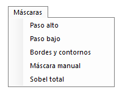

Las máscaras se sirven de un método matemática denominado máscara de convolución. Convolución es el tratamiento de una matriz por otra que se llama kernel. Este kernel no es más que una matriz (de 3x3) cuyo píxel central será el evaluado y los píxeles adyacentes son sus vecinos. De esta manera el valor del píxel evaluado se transformará en función del valor de sus vecinos. Ejemplificándolo, vamos a imaginar una matriz de 3x3 y cuyos valores para los tres canales RGB son:

Tabla 1. Valores píxeles.
20,30,200 |
21,32,190 |
30,40,202 |
40,21,180 |
50,33,190 |
20,41,203 |
21,30,200 |
22,31,192 |
40,35,201 |

A continuación, vamos a aplicar un kernel con los siguientes valores:

Tabla 2. Kernel de 3x3
1 |
1 |
1 |
1 |
2 |
1 |
1 |
1 |
1 |

Este kernel actuará sobre todos los píxeles de la imagen, en este caso, vamos a aplicarlo sobre el píxel central (50, 33, 190), por lo tanto, las operaciones a realizar para calcular el nuevo valor del píxel serían:
En negrita se ha resaltado el píxel central.
Como se comprueba, la operación que se realiza es la suma entre todos los valores de los vecinos (del kernel) en función de sus pesos y se divide entre el total de la suma de los pesos. En la siguiente imagen se puede observar gráficamente (imagen extraída de la documentación de GIMP):

Ilustración 2. Ejemplo de kernel (extraído de GIMP).
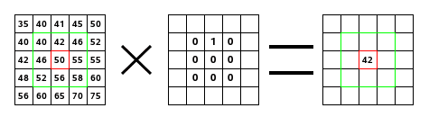

Adicionalmente, el resultado puede dividirse con la suma de dos valores (Desviación+factor). Estos valores de forma predefinida suman 1 para no afectar al resultado final.
Apolo sólo provee de máscaras de 3x3. Si usted requiere máscaras mayores, puede notificarlo y en poco tiempo lanzaremos una actualización que incluya máscaras mayores, o incluso, puede seguir la documentación técnica para desarrollarlo usted, ¡es muy sencillo!
Este tipo de máscaras se utiliza para resaltar detalles de la imagen y enfocarlas. Lo que hace es asignar el peso más alto al píxel central (evaluado) y a los vecinos valores negativos o 0.

Ilustración 3. Menú máscara paso alto.
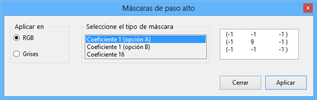

En la anterior imagen, en la máscara seleccionada puede observarse que el valor del píxel central será de 9 y los píxeles vecinos de -1. Si se aplica esta máscara a la imagen original de Lena, se obtiene el siguiente resultado.

Ilustración 4. Lena filtro de paso alto.
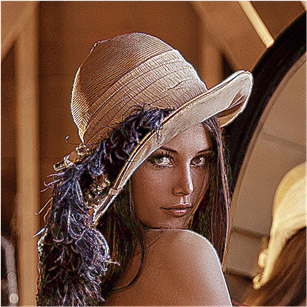

Los detalles puntuales se han resaltado, pero por contra, se ha introducido bastante ruido en la imagen.
Este tipo de filtros se utiliza generalmente para eliminar ruido en una imagen, suavizarla o desenfocarla. Lo que hace es asignar pesos similares a todos los píxeles del kernel y así suavizar los colores.

Ilustración 5. Menú filtro paso bajo.
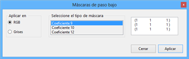

En la imagen anterior se observa que la máscara está formada únicamente por 1. De esta manera se consigue suavizar todos los colores de la imagen. Aplicando el filtro de la ilustración sobre la imagen original de Lena, se observan sus resultados.

Ilustración 6. Lena filtro paso bajo.
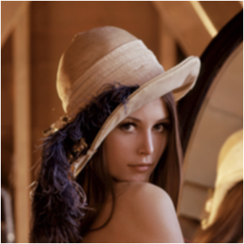

En la ilustración se ve cómo se han disminuido los detalles en la imagen y se aprecia que la imagen está desenfocada. Esto es debido a que el rango de colores ha disminuido y las diferencias entre colores son menores que antes.
Las máscaras agrupadas en este menú se utilizan generalmente para detectar bordes de una imagen o contornos. Lo que se busca al aplicar estos kernels es buscar los píxeles límite o frontera para así determinar el perímetro dentro de la imagen.

Ilustración 7. Menú de bordes y contornos.
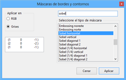

En la ilustración anterior se observa el menú de bordes, el cual dispone de un buscador para localizar de forma más fácil la máscara seleccionada. En el siguiente caso, se va a aplicar la máscara de sobel. Esta máscara está pensada para buscar puntos frontera en la imagen y así poder visualizar los bordes.

Ilustración 8. Lena sobel horizontal.
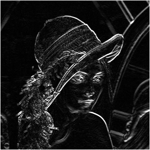

Se ha aplicado la máscara en escala de grises para obtener unos mejores resultados. Como puede observarse la detección de contornos con sobel es bastante buena. Si se aplica a continuación un filtro de paso bajo se podría eliminar el exceso de ruido.
Esta opción permite crear un kernel de 3x3 a elección libre del usuario. Además de los 9 valores de la máscara, se puede seleccionar el valor del factor y la desviación, en caso de querer aplicarla y si se quiere aplicar en el espacio RGB o en escala de grises.

Ilustración 9. Menú máscara manual.
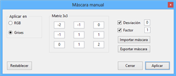

Opcionalmente, se puede exportar la máscara y se creará un archivo XML que se almacenará en la configuración de Apolo. Este archivo (máscara) puede volver a utilizarse pulsando la opción importar máscara y buscándola por su nombre.
A continuación se puede ver la imagen de Lena a la que se ha aplicado una máscara personalizada con los valores mostrados en la ilustración anterior.

Ilustración 10. Lena máscara manual (repujado).
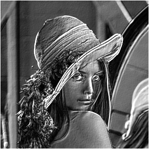

La máscara se ha aplicado sobre la escala de grises y sus valores corresponden a una máscara conocida como repujado.
La función sobel total es una aplicación específica de las anteriores. Simplemente aplica sobre la imagen original los cuatro tipos de sobel (horizontal, vertical, diagonal 1, diagonal 2) y una vez almacenadas esas imágenes, las une para obtener el resultado final.

Ilustración 11. Lena sobel total.
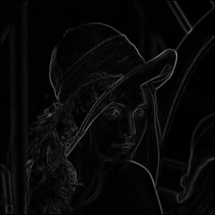

Comparándola con la imagen en la que sólo se había aplicado sobel horizontal, el nivel de ruido es inferior y el detalle de los bordes sea resaltado. Si sobre esta imagen se intentan eliminar los valores menos blancos, el resultado sería una muy buena detección de bordes.
Created with the Personal Edition of HelpNDoc: Create HTML Help, DOC, PDF and print manuals from 1 single source